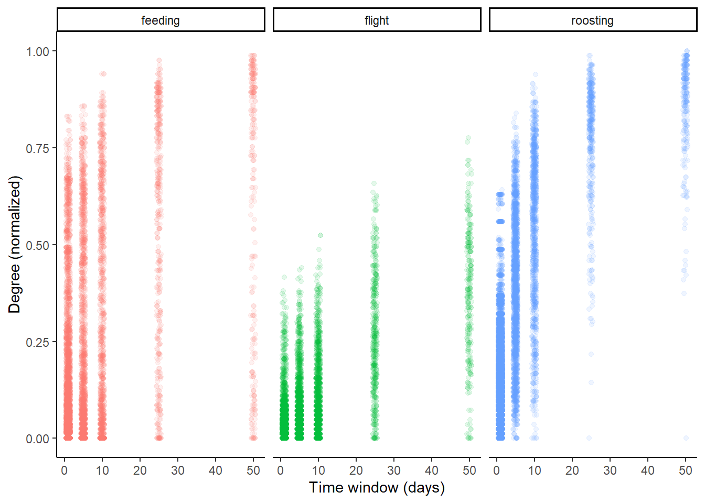
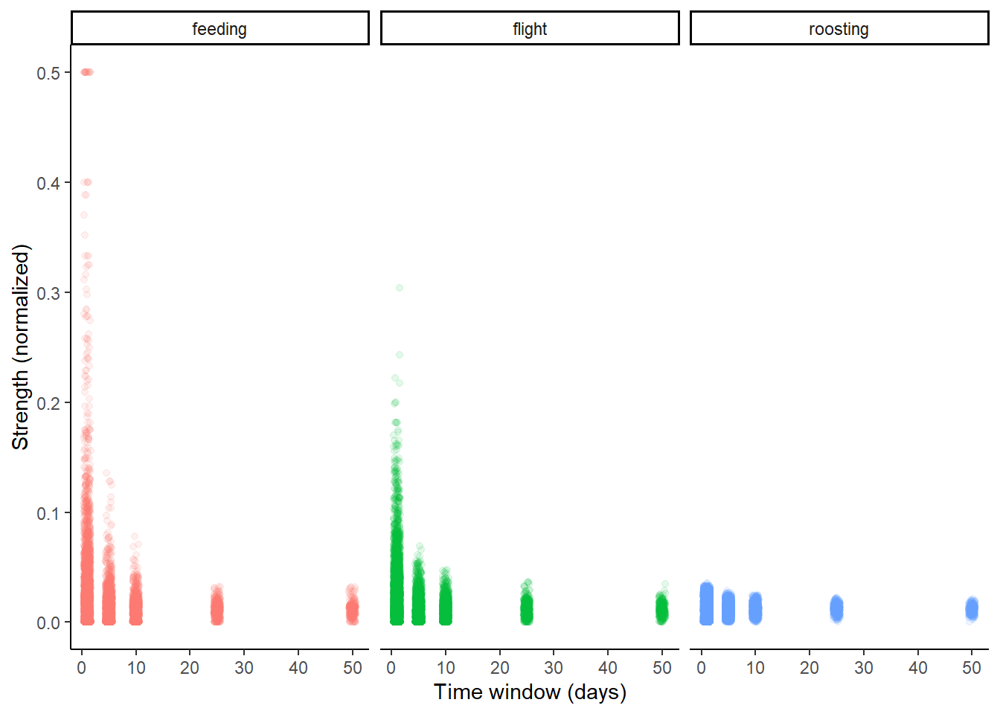
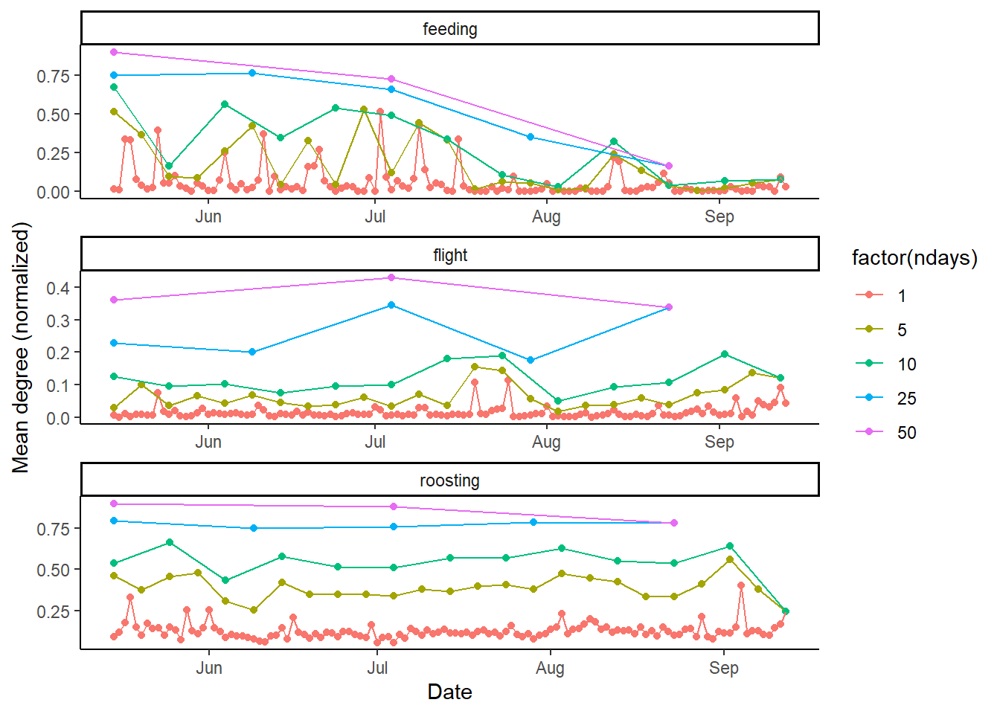
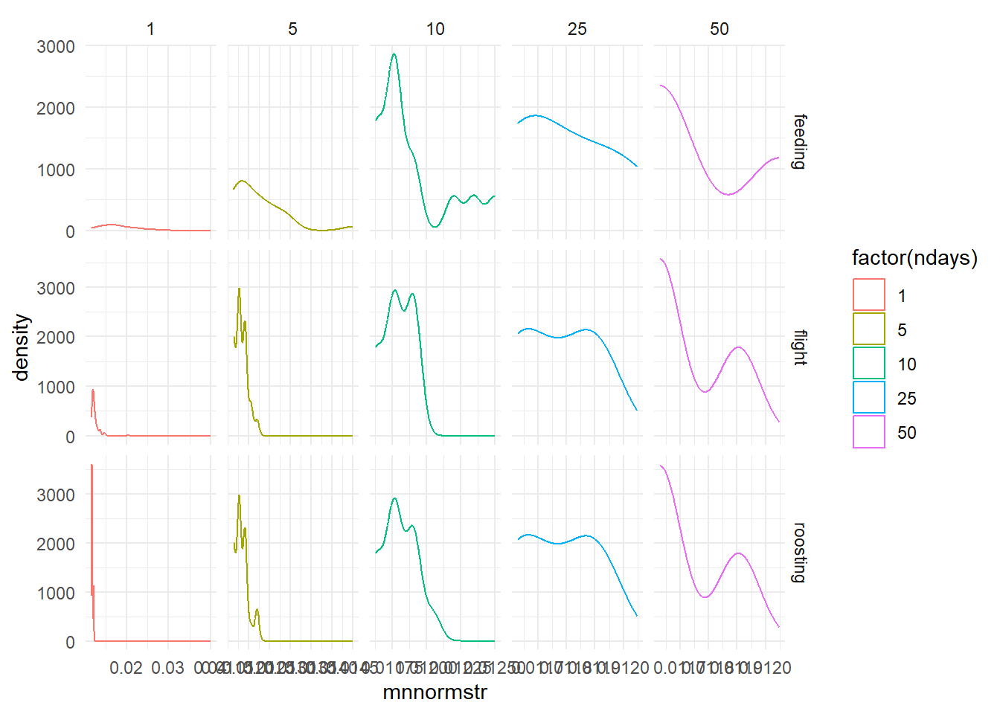
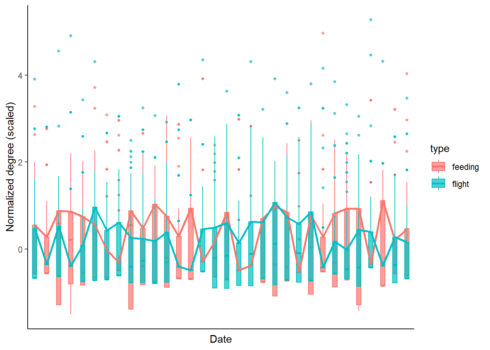
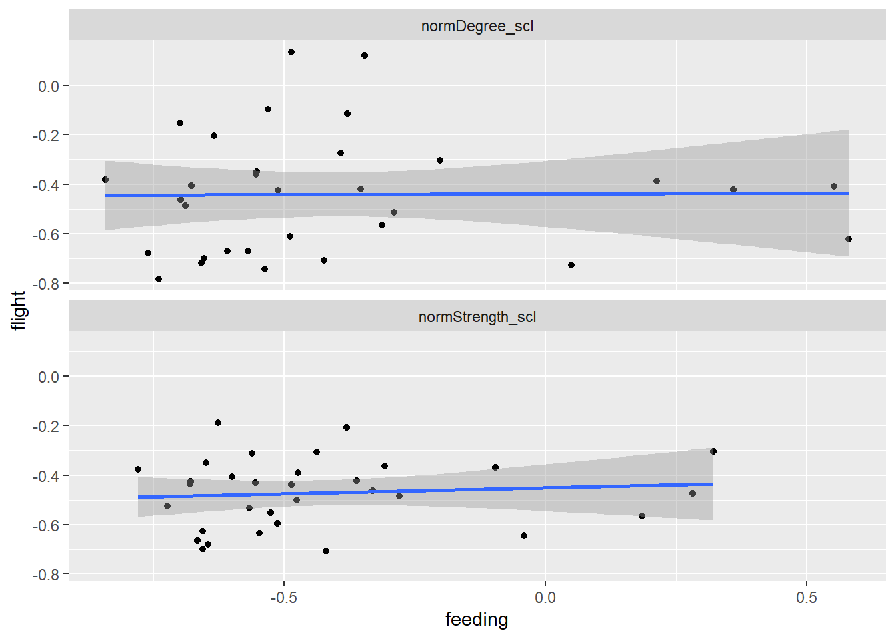
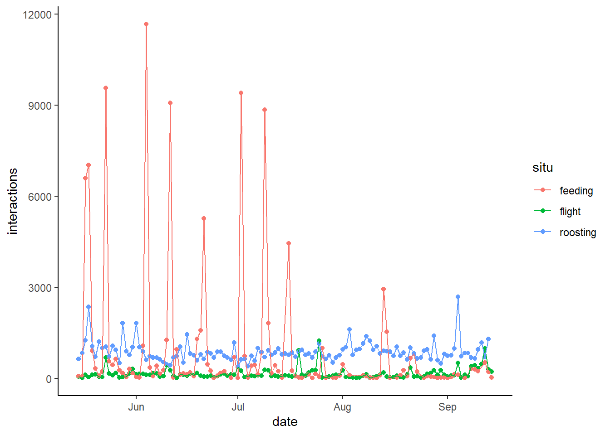

-- Attaching core tidyverse packages ------------------------ tidyverse 2.0.0 --
v dplyr 1.1.4 v readr 2.1.5
v forcats 1.0.0 v stringr 1.5.1
v ggplot2 3.5.0 v tibble 3.2.1
v lubridate 1.9.3 v tidyr 1.3.1
v purrr 1.0.2
-- Conflicts ------------------------------------------ tidyverse_conflicts() --
x dplyr::filter() masks stats::filter()
x dplyr::lag() masks stats::lag()
i Use the conflicted package (<http://conflicted.r-lib.org/>) to force all conflicts to become errors
library(igraph)
Attaching package: 'igraph'
The following objects are masked from 'package:lubridate':
%--%, union
The following objects are masked from 'package:dplyr':
as_data_frame, groups, union
The following objects are masked from 'package:purrr':
compose, simplify
The following object is masked from 'package:tidyr':
crossing
The following object is masked from 'package:tibble':
as_data_frame
The following objects are masked from 'package:stats':
decompose, spectrum
The following object is masked from 'package:base':
union
library(ggraph)library(here)
here() starts at C:/Users/Kaija/Desktop/vultureTemporal
Make some visualizations
Taking a look at some metrics: how does individual degree differ by time window?
metrics_indiv %>%ggplot(aes(x = ndays, y = normDegree, col = type))+geom_jitter(alpha =0.1, width =0.6)+theme_classic()+facet_wrap(~type)+ylab("Degree (normalized)")+xlab("Time window (days)")+theme(legend.position ="none")+NULL

What about individual normalized strength?
metrics_indiv %>%ggplot(aes(x = ndays, y = normStrength, col = type))+geom_jitter(alpha =0.1, width =0.6)+theme_classic()+facet_wrap(~type)+ylab("Strength (normalized)")+xlab("Time window (days)")+theme(legend.position ="none")+NULL
Warning: Removed 1091 rows containing missing values or values outside the scale range
(`geom_point()`).

Okay interesting. What about mean degree or strength across the whole population? (We will still have different numbers of dots for each time window–maybe only one or two for the highest time window, and many for the 1-day window.
This plot definitely suggests that we have different temporal scales going on!
How do network-level metrics change over time? (I have not calculated network-level metrics such as density and modularity yet–could go back and do that. For now, I’m going to use mean mean degree/mean mean strength as measures).

Now let’s examine how the network measures change over the time points at different scales.
Degree:
# How do network-level measures change over the time points?## DEGREEmetrics_net <- metrics_indiv %>%group_by(ndays, int, type, n) %>%summarize(mndeg =mean(degree),mnstr =mean(strength),mnnormdeg =mean(normDegree),mnnormstr =mean(normStrength)) %>%mutate(int = lubridate::ymd(int))
`summarise()` has grouped output by 'ndays', 'int', 'type'. You can override
using the `.groups` argument.
metrics_net %>%ggplot(aes(x = int, y = mnnormdeg, col =factor(ndays)))+geom_point()+geom_line()+facet_wrap(~type, ncol =1, scales ="free")+geom_hline(aes(yintercept =0.5), col ="black", linetype =2)+theme_classic()
Warning: Removed 13 rows containing non-finite outside the scale range
(`stat_density()`).

# It's a little harder to know how to interpret this one, compared to the degree one.
metr <- metrics_indiv %>%filter(type %in%c("flight", "feeding"), ndays ==1) %>%filter(lubridate::ymd(int) %in%seq(from = lubridate::ymd("2023-05-15"), to = lubridate::ymd("2023-06-15"), by =1)) %>%group_by(type, int) %>%mutate(normDegree_prop = normDegree/max(normDegree),normDegree_scl = (normDegree -mean(normDegree))/sd(normDegree), # looks like this is the one we want. Distributions are still pretty right-skewed, but that's okay.normDegree_scl_log =log(normDegree_scl),normDegree_log =log(normDegree),normStrength_prop = normStrength/max(normStrength),normStrength_scl = (normStrength -mean(normStrength))/sd(normStrength),normStrength_scl_log =log(normStrength_scl),normStrength_log =log(normStrength))
Warning: There were 128 warnings in `mutate()`.
The first warning was:
i In argument: `normDegree_scl_log = log(normDegree_scl)`.
i In group 1: `type = "feeding"` and `int = "2023-05-15"`.
Caused by warning in `log()`:
! NaNs produced
i Run `dplyr::last_dplyr_warnings()` to see the 127 remaining warnings.
metr %>%ggplot(aes(x =as.factor(lubridate::ymd(int)), y = normDegree_scl, col = type, fill = type))+geom_boxplot(outlier.size =1,position =position_dodge(width =0), # so we get them on top of each otheralpha =0.7)+theme_classic()+theme(axis.text.x =element_blank(),axis.ticks.x =element_blank(),NULL)+stat_summary(fun =~quantile(.x, 0.75),geom ='line',linewidth =1,aes(group = type, colour = type),position =position_dodge(width =0) # this has to match the position_dodge for the boxplot )+ylab("Normalized degree (scaled)")+xlab("Date")

# Is there a negative relationship between the degree distributions in the two situations?medians <- metr %>%group_by(ndays, type, int) %>%summarize(normDegree_scl_med =median(normDegree_scl)) %>%pivot_wider(id_cols =c(ndays, int), names_from = type, values_from = normDegree_scl_med) %>%mutate(metric ="normDegree_scl") %>%bind_rows(metr %>%group_by(ndays, type, int) %>%summarize(normStrength_scl_med =median(normStrength_scl)) %>%pivot_wider(id_cols =c(ndays, int), names_from = type, values_from = normStrength_scl_med) %>%mutate(metric ="normStrength_scl"))
`summarise()` has grouped output by 'ndays', 'type'. You can override using the
`.groups` argument.
`summarise()` has grouped output by 'ndays', 'type'. You can override using the
`.groups` argument.
medians %>%ggplot(aes(x = feeding, y = flight))+geom_point()+geom_smooth(method ="lm")+facet_wrap(~metric, ncol =1) # hmm, there seems to be no relationship between the two...
`geom_smooth()` using formula = 'y ~ x'

What about the number of interactions over time?
We have to go back to the edge lists (not the graphs created from them) for this.
load(here("data/edges_flight.Rda"))load(here("data/edges_feeding.Rda"))load(here("data/edges_roosting.Rda"))# Just taking the daily edge lists; we don't need the other time scales for now.fl_edges_days <- purrr::list_rbind(edges_flight[[1]])fe_edges_days <- purrr::list_rbind(edges_feeding[[1]])ro_edges_days <- purrr::list_rbind(edges_roosting[[1]])
epd %>%ggplot(aes(x = date, y = interactions, col = situ))+geom_point()+geom_line()+theme_classic() # those are definitely feeding events!!

# Dates with high numbers of co-feeding interactionsepd %>%filter(situ =="feeding", interactions >2500) # 10 feeding events, in order. Does this match up?